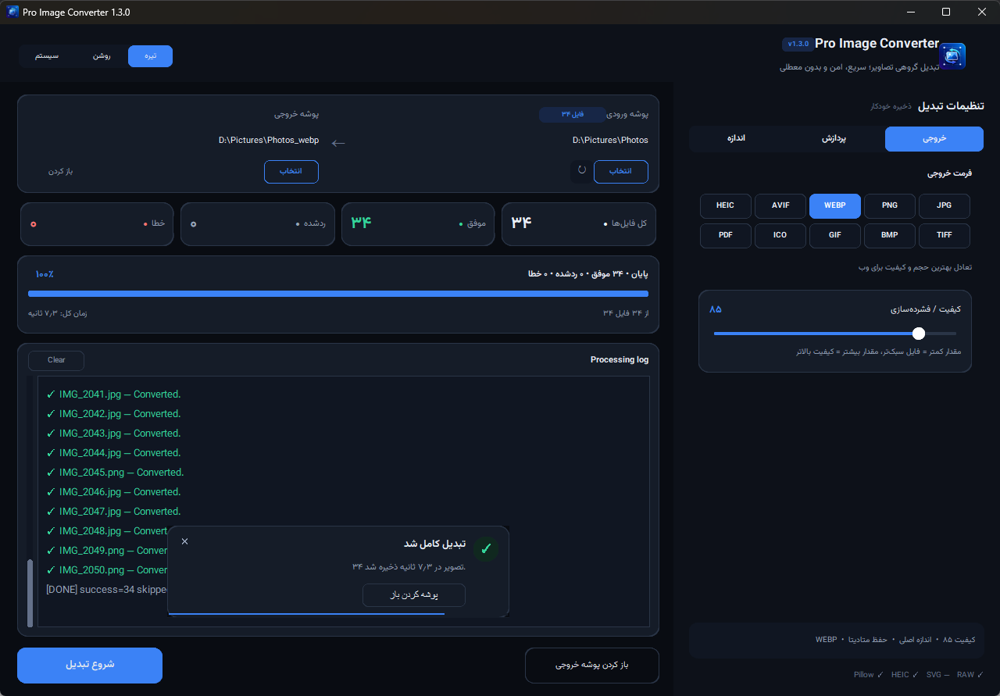

یک پوشه عکس،
یک کلیک، تمام.
هزاران تصویر را یکجا به WEBP، AVIF، JPG، PNG و فرمتهای دیگر تبدیل کنید؛ با تغییر اندازه، حفظ متادیتا و ساختار پوشهها، بدون اینکه برنامه حتی یک لحظه قفل شود.

هر چیزی که برای تبدیل دستهای لازم دارید
برای عکاسها، طراحها و توسعهدهندههای وب که میخواهند حجم تصاویر را کم کنند یا فرمتشان را یکجا عوض کنند.
تبدیل گروهی پرسرعت
یک پوشه یا هزاران فایل را با چند رشتهی پردازشی همزمان تبدیل کنید؛ رابط کاربری در تمام مدت روان میماند و هر لحظه میشود لغو کرد.
زیرپوشهها و ساختار
زیرپوشهها را هم پردازش کنید و خروجی دقیقاً با همان ساختار پوشههای ورودی ساخته شود.
کیفیت و اندازه
کیفیت فشردهسازی را تنظیم کنید و با عرضهای آماده یا ابعاد دلخواه، تصاویر را با حفظ نسبت کوچک کنید.
حفظ اطلاعات تصویر
EXIF، پروفایل رنگ و تاریخ فایلها حفظ میشود؛ یا اگر حریم خصوصی مهم است، همهی متادیتا را کامل پاک کنید.
شفافیت و انیمیشن
برای JPG، BMP و PDF رنگ پسزمینهی دلخواه جای شفافیت را میگیرد. GIF و WEBP متحرک هم متحرک میمانند.
امن و بیخطر
هر فایل اول موقت ساخته و بعد جایگزین میشود؛ هیچ تصویری نیمهکاره خراب نمیشود و فایلهای قبلی بیاجازه بازنویسی نمیشوند.
ده فرمت خروجی، بیش از بیست فرمت ورودی
برنامه هنگام اجرا تشخیص میدهد کدام فرمتها روی سیستم شما قابل خواندن و نوشتناند و فقط همانها را نشان میدهد.
خروجی
همهی فرمتهای رایج وب، چاپ و آیکون.
ورودی
فرمتهای استاندارد، بهعلاوهی وکتور و فایل خام دوربین.
همینجا امتحان کنید
چند تصویر را بکشید و رها کنید تا ببینید چقدر از حجمشان کم میشود. تبدیل کاملاً داخل مرورگر خودتان انجام میشود و هیچ فایلی جایی ارسال نمیشود.
فرمت خروجی
کیفیت
حداکثر عرض (پیکسل)
نسخهی دسکتاپ کار بیشتری میکند: AVIF و HEIC، فایلهای RAW و SVG، حفظ EXIF و پروفایل رنگ، و پردازش کل پوشه با زیرپوشهها.
رابط کاربری
مسیرها و آمار در سمت چپ، همهی تنظیمات در سه زبانهی سمت راست. تنظیمات خودکار ذخیره میشوند.
بعد از تبدیل ۳۴ تصویر به WEBP؛ اعلان شناور خودش بسته میشود.
بدون نصب، بدون پایتون
نسخهی آماده یک فایل اجرایی تک است؛ دانلود کنید و اجرا کنید.
دانلود
فایل ProImageConverter.exe را از صفحهی Releases یا دکمهی بالای صفحه بگیرید.
اجرا
اجرایش کنید. اگر SmartScreen هشدار داد، روی More info و سپس Run anyway بزنید.
تبدیل
پوشهی ورودی را انتخاب کنید، فرمت و کیفیت را تعیین کنید و «شروع تبدیل» یا Ctrl+Enter را بزنید.
# اجرا از سورس (Python 3.11+) git clone https://github.com/mr-shady/ProImageConverter.git cd ProImageConverter python -m pip install -r requirements.txt python app.py # پشتیبانی اختیاری SVG و RAW python -m pip install -r requirements-optional.txt # ساخت فایل اجرایی build_exe.bat
سؤالهای رایج
آیا تصاویر من جایی ارسال میشوند؟
نه. برنامه کاملاً آفلاین کار میکند و هیچ اتصال اینترنتی لازم ندارد. بخش «امتحان آنلاین» همین صفحه هم فقط داخل مرورگر شما اجرا میشود.
چرا خروجی SVG ندارد؟
تبدیل تصویر پیکسلی به SVG واقعی «وکتورسازی» است، نه تغییر فرمت. ورودی SVG پشتیبانی میشود و به هر فرمت پیکسلی تبدیل میشود.
اگر پوشهی خروجی داخل پوشهی ورودی باشد چه میشود؟
مشکلی نیست؛ برنامه پوشهی خروجی را از اسکن حذف میکند تا فایلهای تبدیلشده دوباره پردازش نشوند.
میانبرهای صفحهکلید چیست؟
Ctrl+O انتخاب پوشهی ورودی، Ctrl+Enter شروع تبدیل و Esc لغو عملیات.